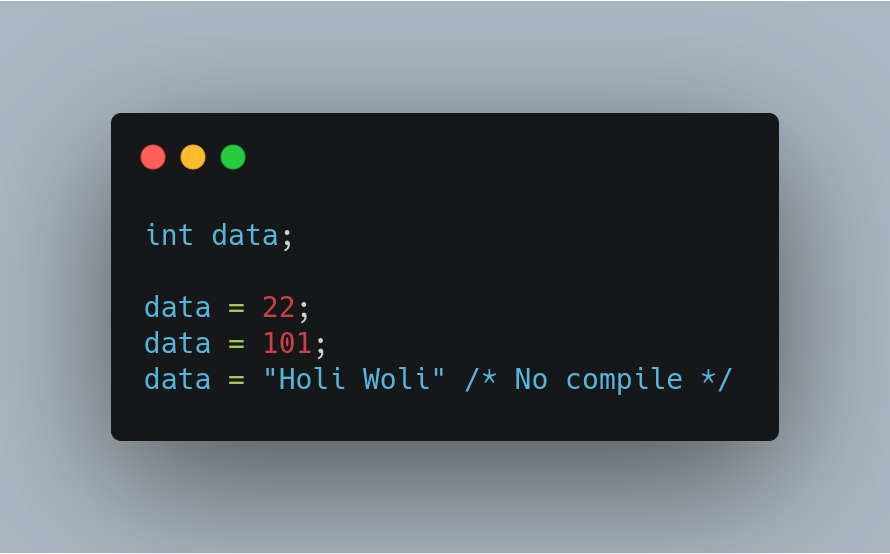
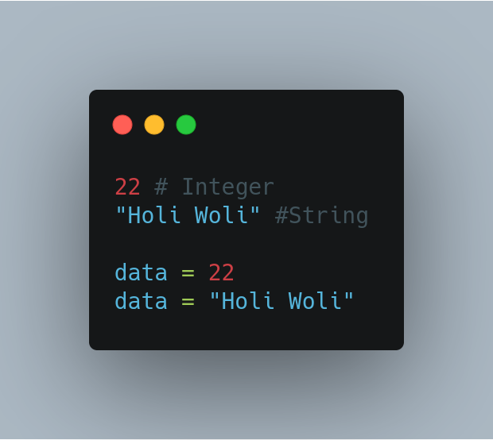
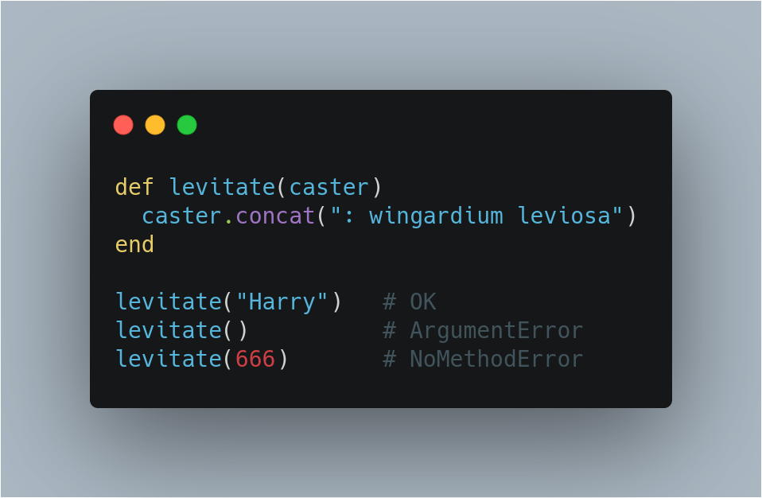
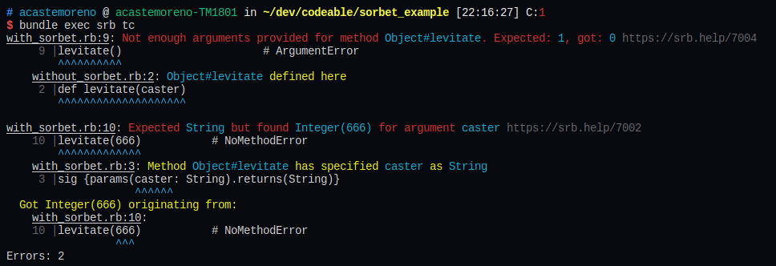

Es la definicion del type que tendra una variable.
El tipado de un lenguaje define la forma como se crean y modifican las variables.
typetype de una variable no se puede modificar.
type esta asociado al valor de una variable y no a la variable en si.types
Tipado estático: compilador comprueba que se asignan valores correctos a las variables.
Se detectan errores en tiempo compilación
Tipado dinámico: el compilador o interprete no se sabe qué tipo de valor tiene una variable hasta la ejecucion.
Permite flexibilidad
Tengo que esperar a que el codigo se ejecute para darme cuenta de un error.
El problema no puede ser tan obvio

Type Checker
Declarar los types de los argumentos y de la salida para metodos
.gemfile... gem 'sorbet', :group => :development gem 'sorbet-runtime'
bundle exec srb initbundle exec srb tc para una comprobacion inicial.Sorbet comprube un archivo en las siguientes condiciones:
typed: true
# typed: true
sig {params(caster: String).returns(String)}
def levitate(caster)
caster.concat(": wingardium leviosa")
end
levitate("Harry") # OK
levitate() # ArgumentError
levitate(666) # NoMethodError
Luego ejecutar bundle exec srb tc

Gracias ˊ・ω・ˋ